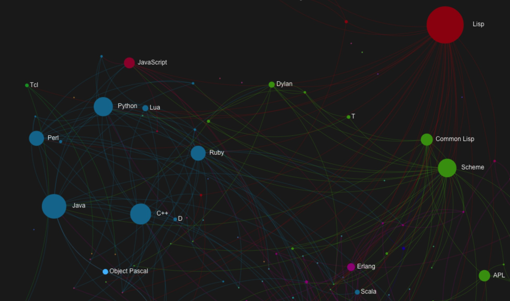
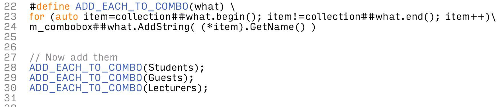

Programming languages and their paradigm
Some programming languages are best at particular programming paradigm. For example, Haskell is so good at functional programming because it was designed specifically for this purpose. C# and Ruby are very OOP talents, etc.

Modern programming languages can do multiple paradigms. You can write JavaScript in functional way or purely object-oriented as you see it's useful to do. You can design your code in either imperative, OOP, or functional scheme (or even a mixture of them) in Ruby or Python as well.
JavaScript idioms
JavaScript is a good example of multi-paradigm language which you can write it in various ways, e.g. OOP, meta programming, functional programming, and more. Also, it offers you some neat power to do magical thing like this:
What this code above does is it generates a variable
args with a one-time-use function. The value of this varialble is generated dynamically with a simple inline closure so the function is utilized once.
From above, given the code is called via $> node snippet.js foo bar --h
The snippet generates args = ['foo','bar','--h']
Neat and simple, isn't it? Use an Javascriptic inline function makes it easy.
Even more power with JavaScript, see the code below:
JavaScript has big privilege over JSON data manipulatin as it integrates JSON as a native object. Given a JSON data, it is totally legal to treats that object as one of the native JavaScript object, array, string, whatsoever.
which is brilliant!
JavaScript array is also brilliant! You can do tons of common array manipulations like map one object to another, filter by criteria, chop by indexes, aggegrates, and lots more. More technically speaking, this is a pure power of "functional programming" but remember JavaScript is a fully multi-paradigm language so it returns an array which you can chain it like this!
It looks simple, concise, but massively semantic :)
You don't even know how each function was implemented but you can implicitly understand what it does with your student records.
JavaScript also accepts Monkey patching. So you can extend or splice the behavior of the standard object like this:
The code snippet above adds an ability to the conventional array so it can calculate square root value of each of its element. Thus, you can easily call:
[1,100,900,625].sqrt();
Which yields a result of = [1,10,30,25]
No need to "for each" at all :)
C++ idioms
C++ is old school but it has some latent powerful characteristics. People who write C++ usually simplify their coding problems with "macros". Let's have a look at a snippet below:
Looks neat?
Nope, some people frown, shrug their shoulders and claim this is horrible :|
However, look at another example below, instead of buring too much energy doing this:
The code above looks so scary. C++ developers give you an evil smile and replace the bloody code above with this:

Beautiful enough? Do you mind if you need to add 7 stupid collections to those 7 comboboxes instead of 3 as above? This macro saves your life.
C++ macro is evil, forget it.
Pythonic idioms
Python is undoubtedly one of the best programming languages for data processing. Especially the processing of data collection, Python is very good at this job.
Take a break and look at the code below:
Making a key-value dictionary object from a list within a single line of code is very common in Python. You may already know this is well known as Dict comprehension, a sibling feature of List comprehension.
Python code is translated from mathematical expressions very comfortably. The comprehension above is also a form of mathematical expression called "Monad". If you are a math guy, writing Pythonic idioms from your math mindset might be almost effortless.
For example, if you define a set as: A = {x | x ∈ Z 1≤x≤10 }
This is translated into Python as:
The list comprehension looks just like a set definition, doesn't it? :)
Operations on data collection are convenient and they look much like mathematical expressions in Python. See the code below which calculates arbitrary mean and variance of the collection of data using Pythonic functions.
Unlike JavaScript, instead of mutating objects with their own methods, Python supplies a set of built-in functions instead. This looks more like functional paradigm where all those built-in functions are purely functional - function does not keep the states, just operate what it is meant to do.
Python might not be a best candidate for OOP, but it implements functional programming well.
In Python, function is first-class citizen like other functional programming language or even multi-paradigm languages. Javascript-like closures are also available in Python. See example below:
Function-builder functions, currying, etc. are available and legit in Python. People who are familiar with JavaScript will definitely read and understand what the code snippet above does pretty comfortably.
In Pythonic way, using function decorator is often preferred.
Nothing is perfect. Choose the right weapon.
It's not wise to stick with any programming languages extensively for all jobs. There is no silverbullet for every problem in the reality. Some problems might be easier to solve and implement with Python, but worse to pay in C++. Good developers should never restrict their boundary of preferred programming languages. Capability of writing broader set of languages is always beneficial.
Choose the right man on the right job. Also, choose the right tool (programming language) to solve the right problem :)